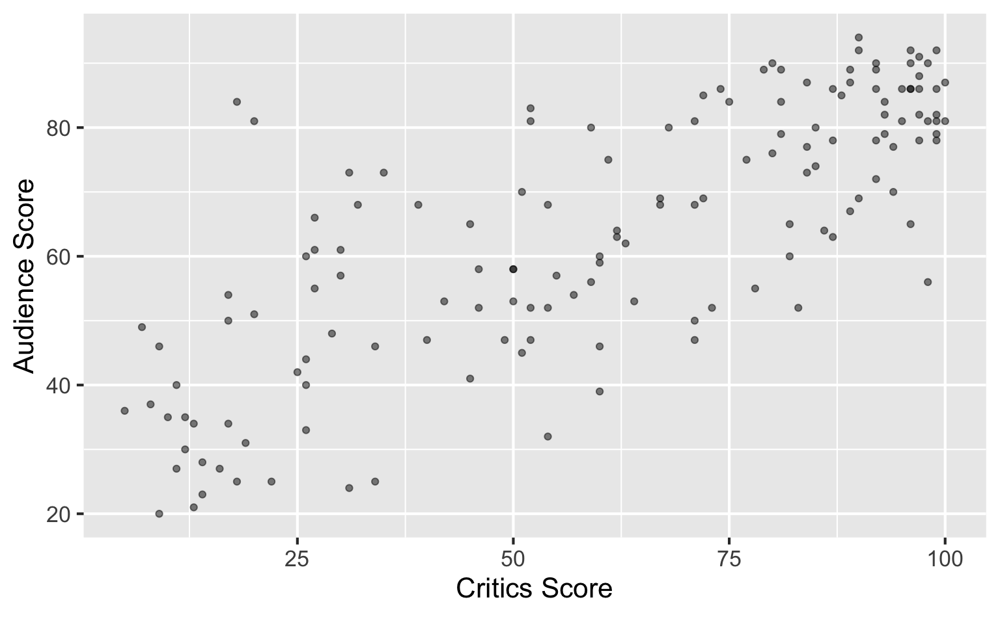
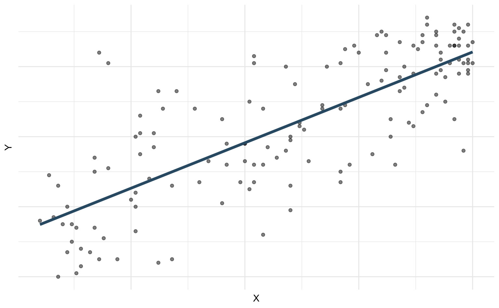
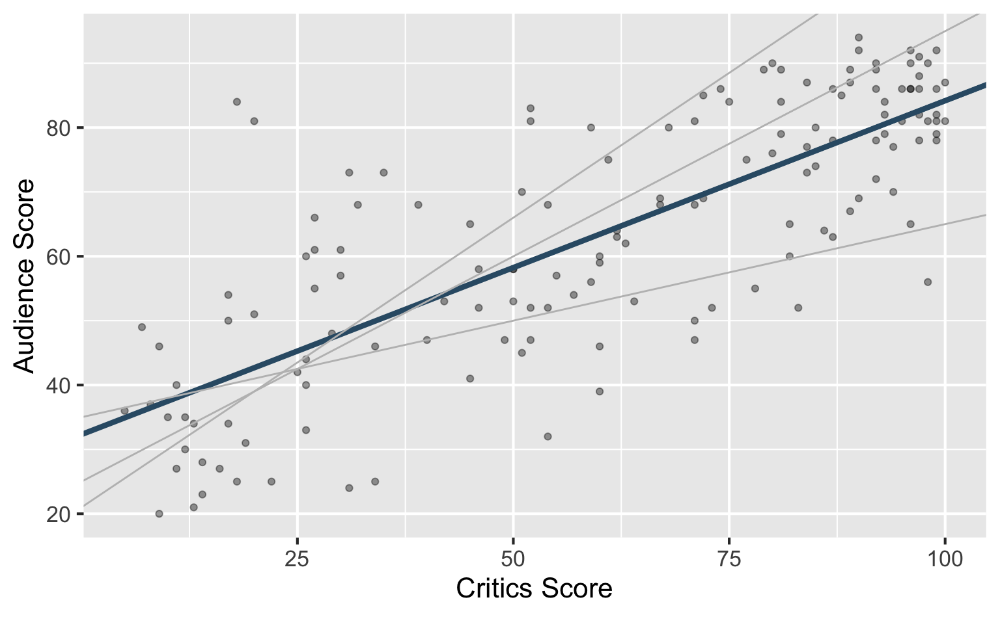
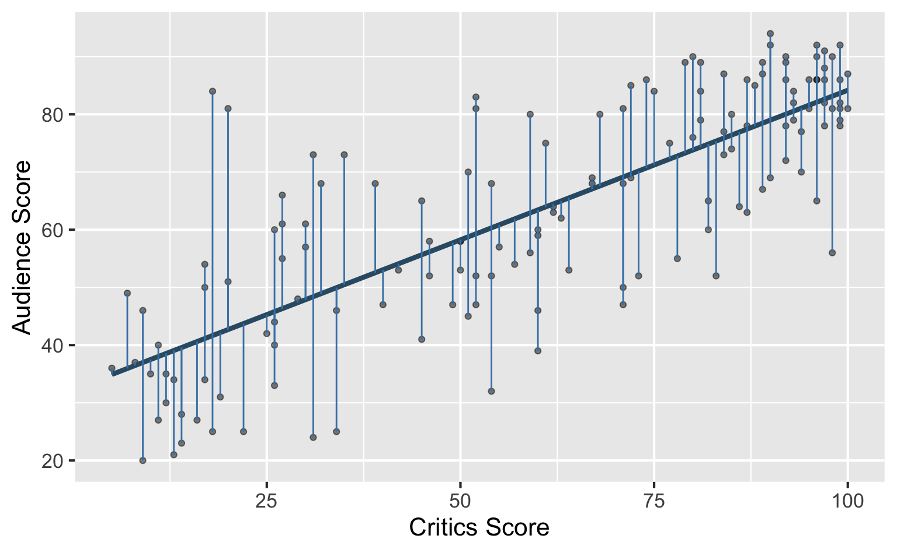

library(fivethirtyeight)
library(tidyverse)
library(tidymodels)Linear regression with a numerical predictor
Modeling and inference
Packages and data
Packages
- fivethirtyeight for data
- tidyverse for data wrangling and visualization
- tidymodels for modeling
Data prep
- Rename Rotten Tomatoes columns as
criticsandaudience - Rename the dataset as
movie_scores
movie_scores <- fandango |>
rename(
critics = rottentomatoes,
audience = rottentomatoes_user
)Data overview
movie_scores |>
select(critics, audience)# A tibble: 146 × 2
critics audience
<int> <int>
1 74 86
2 85 80
3 80 90
4 18 84
5 14 28
6 63 62
7 42 53
8 86 64
9 99 82
10 89 87
# ℹ 136 more rowsData visualization

Regression model
Regression model
A regression model is a function that describes the relationship between the outcome, \(Y\), and the predictor, \(X\).
\[ \begin{aligned} Y &= \color{black}{\textbf{Model}} + \text{Error} \\[8pt] &= \color{black}{\mathbf{f(X)}} + \epsilon \\[8pt] &= \color{black}{\boldsymbol{\mu_{Y|X}}} + \epsilon \end{aligned} \]
Regression model
\[ \begin{aligned} Y &= \color{#325b74}{\textbf{Model}} + \text{Error} \\[8pt] &= \color{#325b74}{\mathbf{f(X)}} + \epsilon \\[8pt] &= \color{#325b74}{\boldsymbol{\mu_{Y|X}}} + \epsilon \end{aligned} \]

Simple linear regression
Use simple linear regression to model the relationship between a numerical outcome (\(Y\)) and a single numerical predictor (\(X\)): \[\Large{Y = \beta_0 + \beta_1 X + \epsilon}\]
- \(\beta_1\): True slope of the relationship between \(X\) and \(Y\)
- \(\beta_0\): True intercept of the relationship between \(X\) and \(Y\)
- \(\epsilon\): Error (residual)
Simple linear regression
\[ \Large{\hat{Y} = b_0 + b_1 X} \]
- \(b_1\): Estimated slope of the relationship between \(X\) and \(Y\)
- \(b_0\): Estimated intercept of the relationship between \(X\) and \(Y\)
- No error term!
Choosing values for \(b_1\) and \(b_0\)

Residuals

\[ \text{residual} = \text{observed} - \text{predicted} = y - \hat{y} \]
Least squares line
. . .
- The residual for the \(i^{th}\) observation is
\[ e_i = \text{observed} - \text{predicted} = y_i - \hat{y}_i \]
. . .
- The sum of squared residuals is
\[ e^2_1 + e^2_2 + \dots + e^2_n \]
. . .
- The least squares line is the one that minimizes the sum of squared residuals
Fitting a model
Interpreting model output
Interpreting the slope
The slope of the model for predicting audience score from critics score is 0.519. Which of the following is the best interpretation of this value?
- For every one point increase in the critics score, the audience score goes up by 0.519 points, on average.
- For every one point increase in the critics score, we expect the audience score to be higher by 0.519 points, on average.
- For every one point increase in the critics score, the audience score goes up by 0.519 points.
- For every one point increase in the audience score, the critics score goes up by 0.519 points, on average.
Interpreting the slope
The slope of the model for predicting audience score from critics score is 0.519. Which of the following is the best interpretation of this value?
- For every one point increase in the critics score, the audience score goes up by 0.519 points, on average.
- For every one point increase in the critics score, we expect the audience score to be higher by 0.519 points, on average.
- For every one point increase in the critics score, the audience score goes up by 0.519 points.
- For every one point increase in the audience score, the critics score goes up by 0.519 points, on average.
Interpreting slope & intercept
\[ \widehat{\text{audience}} = 32.3 + 0.519 \times \text{critics} \]
- Slope: For every one point increase in the critics score, we expect the audience score to be higher by 0.519 points, on average.
- Intercept: For movies with a critics score of 0, we expect the audience score to be 32.3 points, on average.
Is the intercept meaningful?
✅ The intercept is meaningful in context of the data if
- the predictor can feasibly take values equal to or near zero or
- the predictor has values near zero in the observed data
. . .
🛑 Otherwise, it might not be meaningful!
Putting it altogether
Least squares regression
The least squares regression line minimizes the sum of squares residuals. It has the following properties:
Goes through the center of mass point (the coordinates corresponding to average \(X\) and average \(Y\)): \(b_0 = \bar{Y} - b_1~\bar{X}\)
Slope of the line has the same sign as the correlation coefficient: \(b_1 = r \frac{s_Y}{s_X}\)
Sum of the residuals is zero: \(\sum_{i = 1}^n \epsilon_i = 0\)
Residuals and \(X\) values are uncorrelated